《Foundations of Modern Query Languages for Graph Databases》
Overview
研究了现代查询语言的基本特性。首先讨论了两种流行的图数据模型：
-
edge-labeled graph: 节点通过有向，带标签的边连接。 -
property graph：节点和边可以进一步带有属性。
然后讨论了两个最基本的图查询功能：graph pattern和navigational expresssions。
还讨论了几种语义，在何种语义下可以使用前面的特征进行查询，特征和语义的选择对复杂性有什么影响。并以用于查询图的三种现代语言提供此类查询的示例：SPARQL，CyPher和Gremlin。
Graph Data Models
图可以用来编码数据，其中节点表示感兴趣域中的对象，边表示这些这些对象之间的关系。例如，如果使用图来编码关于电影的数据，则节点可以是演员和电影，并且一条从a到b的（有向）边可能表示a是b中的演员。注意到，边的方向此时很重要，我们想说的是一个演员在电影中扮演主角，而不是相反。一个电影数据库可以通过图建模为如下所示：
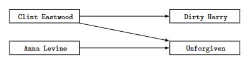
然而，难以用这种简单的形式表达出不同类型的关系。比如，假设我们希望表示 Clint Eastwood 也是 Unforgiven 中的导演。我们可以考虑在这些节点之间添加另外一条边，从而得到以下列方式连接的节点：
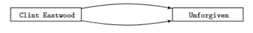
但是，哪条边代表了 Clint Eastwood 也是 Unforgiven 中的导演呢？ 更一般的说，如果节点之间有许多不同类型的关系，我们如何区分他们呢？
Edge-labeled graphs
一个简单且广泛解决的方法是使用edge-labeled graphs，其中我们额外地给边分配标签。以表明在被描述的领域中不同类型的关系。
我们可以在下图中看到一个例子，Clint Eastwood 与 Unforgiven 有两种关系，一种是标有 directs 的边，另一种是标有 acts_in 的边。
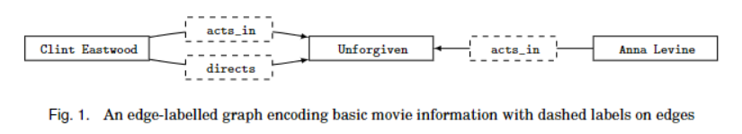
在下文中，我们正式定义edge-labeled graph。
Definition 2.1 (Edge-labeled graph). An edge-labeled graph is a pair , where
- is a finite set of vertices (or nodes).
- is a finite set of edges; formally, where is a set of labels.
标签 directs 和 acts_in 取自集合 。
edge-labeled graph在实践中被广泛采用，比如，他们用于编码Web上机器可读内容的 Resource Description Framework (RDF)标准的基础。RDF图只是一组类似于图数据库中边的一组三元组，但包含一些进一步的细节：在RDF图中， 集合 可以被分割成不相交的IRIs， iterals和blank 节点集合，其中是IRIs的子集。
注意到，edge-labeled graph定义对于图的拓扑没有任何限制，可以是有向图或无向图。
尽管edge-labeled graph结构简单，但他可以编码复杂的信息。比如，当在图数据库描述某些电影时，我们可能希望表示一个演员在同一个电影中扮演多个不同角色。 起初，这似乎与我们对图数据库的定义不兼容因为表示一组边的set：我们不能在同一对节点之间有多个带有相同标签的边。 然而，我们可以将这些信息建模为edge-labeled graph，如下图所示：
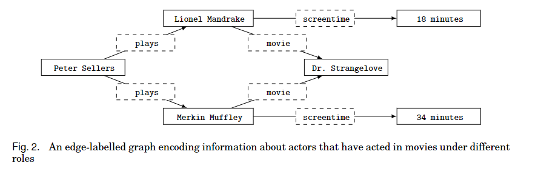
我们可以看出，通过使用节点（而不是边）来表示电影中演员饰演的每个角色，我们不仅可以编码演员在电影中饰演多个角色的情况，也可以编码有关这个角色的其他信息，比如：在屏幕上这个角色出现的时间。
Property graph
在edge-labeled graph中，我们使用标签来指示边的类型，其中多个边可能具有相同的类型。 相似地，我们可以考虑为节点添加标签。 比如，在图1中，我们可以将节点 Clint Eastwood 和 Anna Levine 标记为 Person， 节点 Unforgiven 标记为 Movie。 我们甚至可以在一个节点上添加多个标签， 比如为 Clint Eastwood 添加标签 Director 和 Actor。 同时，这种信息也可以通过 edge-labeled graph 表示，比如，在RDF中，为 Movie 创建一个新节点， 并创建一条标签为 type 的边连接到 Unforgiven。 可以看出，将节点标签作为模型的一部分对于用户查询和理解来说有一个更为直接的抽象。
同样地，向edge-labeled graph 添加关于边的信息通常时很麻烦的。例如，如果希望添加信息的来源，比如，act_in 关系来自于网站IMDb，对于此，我们不能简单地向图中添加边。相反地，我们需要创建一个新的关系：act_in 和他们的来源之间的关系。 向edge-labeled graph 中添加新类型的信息可能需要对图形结构进行重大修改，因此需要较大成本。
因此，对于可能会将各种新类型的元信息定期添加到边或节点的场景，最通用和广泛采用的替代方法时使用edge-labeled graph的拓展，被称之为property graph，此模型目前被一些主流的图数据库采用，比如Neo4j，并且最近由学术界和工业界成员组成的 Linked Data Benchmark Council (LDBC) 标准化。
在property graph中，边和节点都可以是带标签的。每条边和每个节点都与另外一个唯一的标识符相关联，该唯一标识符可以作为 hook 分配其他元新信息——以一组 property-value 对的形式（称为 attribute ）的形式——直接关联到该边或节点，在实践中，可以将属性和标签编码为额外的边，在实践中，这样的特性允许直接对图进行注释，而无需修改其整体结构。
比如，在下图中，我们展示了电影数据库中的一个图，其中包含节点和边上的标签和属性。在此图中，节点的属性显示在其下方的圆角矩形中。因此，比如，与节点 相关联的属性是 name 和 gender ，他们相对应的值是 Clint Eastwood 和 male 。另一方面，边不含有任何属性。在此模型中，我们可以直接编码在同一对节点之
间标签相同多条边（有多个不同的标识符），也可以使用额外的属性来拓展图，而不用将复杂的属性重构为节点。
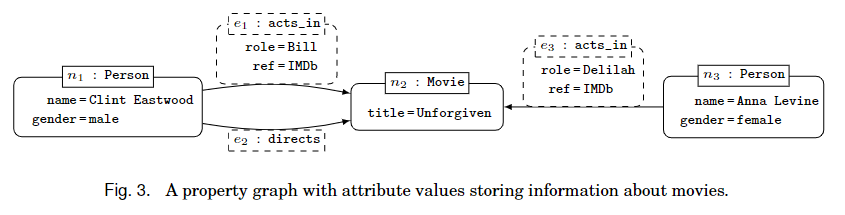
下面，我们正式定义property graph。
Definition 2.3 (Property graph). A property graph is a tuple , where:
- is a finite set of vertices (or nodes).
- is finite set of edges such that and have no elements in common.
- is a total function. Intuitively, indicates that is a directed edge from node to node in .
- is a total function with a set od labels. Intuitively, if (resp., ) and (resp., ), and (resp., ), then is the label of node (resp., edge ) in the property graph .
- is a partial function with a finite set of properties and is a set of values. Instuitively, if (resp., ), and (resp., ), then is the value of property for node (resp., edge ) in the property graph .
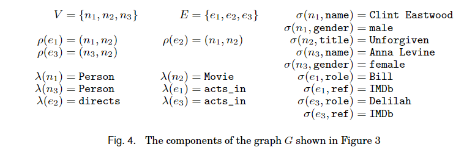
在我们对于property graph，每个节点和边都与一个标签相关联，并且每个 attribute property 至多有一个 value。在一些应用中，在这些位置可能有多个值可用。因此，我们可以考虑一个 property graph 表，称之为 mult-value
`
d property graph，允许在 property graph 中有多个标签和多个多值属性：在定义2.3 中，映射将返回一个标签集合，将返回一个值集合。在实践中，引擎可能有定制策略，例如，在Neo4j——一个流行的 property graph 模型引擎中，它只允许每条边上有一个标签，允许一个节点上有多个标签，但只允许每个标签上有一个值（但可以通过列表实现）。
下面将展示另外一个建模实例：
下图展示了一个社交网络的 property graph 。每个节点的标签可能是 Person， Post 或者 Tag，每条边的标签可能是 dislikes， knows， likes ，hasFollower 或者 hasTag。 标签为 Person 的节点可能有属性 firstName , lastName , gender 和 country， 标签为 Tag 的节点有属性 name， 标签为 Post 的节点可能有属性 content 和 language。 标签为 dislikes 或 likes 的边可能有属性 date。

在下面的介绍中，我们将 edge-labeled graph 统称为 graph databases （图数据库），将 property graph 统称为 graph database engines （图数据库引擎）。
Graph Pattern
在过去的十年中，出现了各种实用的，声明性的查询语言，用于查询上一节中介绍的图数据模型的实例。用于查询RDF图形的多个供应商采用的最早语言之一——是SPARQL（SPARQL Protocol and RDF Query Language）。关于 property graph ，可能最著名的是Neo4j引擎，其开放团队发布了一种名为Cypher的声明式查询语言。 property graph 的另外一种查询语言是 Gremlin， 它是Apache Thinkerpop3 图计算框架的重要组成部分。
尽管这三种查询语言在风格，目的性，表达性，实现方面有很大差异，但他们共享同一个概念核心： graph pattern matching 和 graph navigation。在本节中，主要介绍前者。
graph pattern 中最简单的形式是 basic graph pattern， 是一个应与图数据库相匹配的图结构查询。另外，可以使用其他关系（特征）来扩充 basic graph pattern。我们将由 graph pattern 扩充得到为 complex graph patterns . graph pattern matching 则是对图数据库上的图模式进行评估，它构成了SPRSQL， Cypher和Gremlin。它也被用于各种实际应用，包括化学结构分析，机器学习，规划，语义网络和模式识别。
我们首先引入 basic graph pattern 和 complex graph pattern ，讨论用于评估他们的不同语义，并给出在SPRSQL， Cypher和Gremlin中图模式的具体示例。在此基础上，我们对graph pattern matching 的复杂性做了一些一般性的论述。
Basic graph pattern
At the core of query answering over graph databases is basic graph pattern matching.
Basic graph pattern （bgps） 遵循他们打算查询的图数据库的类型相同的结构，但不只是允许常量，Basic graph pattern 也允许变量。换句话说，用于查询 edge-labeled graph 的图的bgp只是一个 edge-labeled graph ，其中的变量现在可以作为节点或者边的标签出现；用于查询 property graph 的bgp只是一个 property graph ， 其中的变量可以代替任何常量。
bgp的 match 是一个从变量到常量的映射，当这个映射应用于bgp时，结果就行从查询中的变量到组成匹配的数据库中的常量的所有映射。
一个基于 edge-labeled graph 的bgp如下图所示：
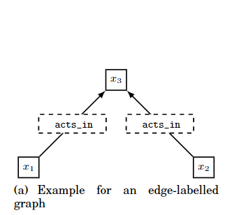
令 为图1中所示的图。假设我们想寻找图中所有参演过同一个电影的演员们，我们可以通过构建如上所示的一个bgp。我们通过在 上查询 得到最终结果。在 中， 表示可以匹配任何项的变量。另外 act_in 是集合 中已有的标签。匹配结果表示为 ， 如下表所示：
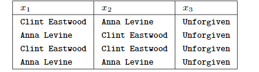
以第一个映射为例，在bgp中，如果我们将变量 代替为 Clint Eastwood， 为 Anna Levine， 为 Unforgiven， 那么我们得到了原始图数据库中的一个子图，我们将这种映射称为一个 在 上的 match。
一个基于 property graph 的bgp如下图所示：
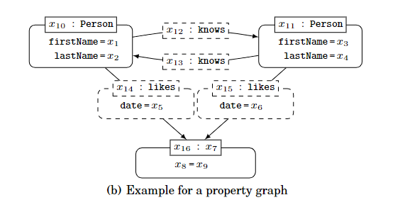
令 为图5中所示的property graph 。假设我们想查询在社交网络中有着共同爱好的朋友，我们希望展示问题中的用户的 first name 和 last name，所有他们共同 like 的项目的细节，以及他们 like 时的日期。我们可以构建一个如上图所示的bgp。
Definition
More formally, let us refer collectively to the sets of terms and from Definition 2.1 and the sets of terms , , , and from Definition 2.3 as contants, denoted . Let denote a set of variables. We could then define bgps for graph databases in relation to Definitions 2.1 by allowing and to contain variables, and likewise we could define bgps for property graph in relation to Definition 2.3 by allowing , , , and to contain variables.
对于上图（a）中的bgp， 我们可以定义查询 ， 其中：
在此情况下，对于，同时，.
对于上图（b）中的bgp，我们可以定义查询， 其中：
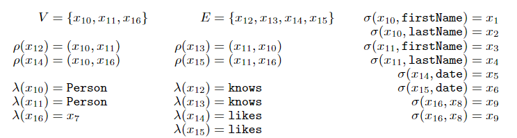
其中，对于，同时，其他项属于.
Evaluation
对图数据库 求 bgp 对应于列出所有与 相关的 的可能匹配项，更正式地，我们可以定义 match 如下所示：
Definition 3.5 (Match). Given a edge-labeled graph and a bgp , a match of in is a mapping from to such that:
- for each constant , it is the case that ; that is, the mapping maps constants to themselves;
- for each edge , it holds that ; this condition imposes that:
- each edge of is mapped to an edge of ,
- the structure of is perserved in its image under in (that is, when is applied to all the terms in , the result is a subgraph of ).
在技术方面，一个 match 对应这个从 到 的一个 homomorphism （同态），其中可能多个 的节点与 中的同一项相对应，比如在（a）中就存在 和 对应同一项的情况。在某些情况下，可能需要变量映射到不同的项中（比如在例子中，寻找演过同一个电影的两个演员，在这种语义下映射到同一项显然是不合理的）；另一方面，可能需要将 $ h$ 限制为单射（一对一），在这种情况下，matching 就是广为人知的 subgraph isomorphism （子图匹配）。但是，在某些应用中这可能过于严格。例如，在某些应用中，可能需要允许多个标签变量匹配同一个标签，而是强制将节点和边的ID视为不同的（节点和边代表着图的结构，标签只是对该结构的注释），这些偏好导致在图数据上执行查询可能又多种不同语义，如下所示：
Homomorphism-based semantics
这是无约束语义：除了定义3.5中的基本条件外， 中 的 match 没有任何额外的这些限制。 通过在 中执行查询 ，可以返回所有可能的同态结果。由于基于同态的方法对应于关系数据库中常见的select-from-where的语义，并且它是bgp中另一种限制性更强的语义的基础，因此它经常被理论界研究。并在SPARQL中应用。
Isomorphism-based semantics
在这种类型的语义下，在允许的映射图中保留了查询的结构，在实践中，某些类型的变量被限制以匹配数据库中不同的常量。由于同构是精确的，也就是说，保留了结构的请求，其可能取决于应用程序，这就给我们留下了各种不同的基于同构的语义，比如：
-
No-repeated-anything semantics：只允许单设，这意味着在匹配中不能将两个变量匹配到同一项上。
-
No-repeated-node semantics：单射限制只适用于映射到节点（或节点id）。在
edge-labeled graph中， 通常只要求节点变量的映射是单射，这意味着多个变量仍然可以映射到相同边标签。这种语义被广泛应用于图匹配应用程序，查询中没有节点会被“折叠”，因为这样会改变查询图的结构。 -
No-repeated-edge semantics: 单射限制只适用于映射到边。换句话说，边变量必须是一对一的，其他类型的变量可以不是单射的。这种语义目前被用于查询语言Cypher。
为了阐述这些语义的不同之处，下例中图 如图3所示，查询 如下图所示：
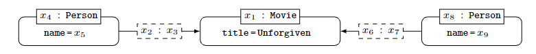
得到的没有任何限制的查询结果如下表所示：
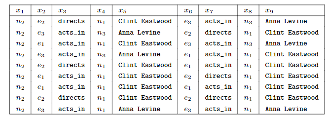
这是在 Homomorphism-based semantics 语义下所有有效的结果。
在 No-repeated-anything semantics 语义中，只有前两行匹配被允许，因为之后七个匹配都存在将多个项映射到同一项的情况。
在 No-repeated-node semantics 语义中，前四行匹配是有效的，因为在后五个匹配中，节点变量 和 被映射到了同一个节点。
在 No-repeated-edge semantics 语义中，前六行匹配是有效的，因为在后三个匹配中，边变量 和 被映射到了同一条边。
正如这个例子所表明的，语义的适当选择可能因应用程序而异，没有一种语义适用于所有的应用程序。
上述语义主要有两个缺点：
- 与这些术语相关的关键问题的计算复杂度可能很高，因为图同态和子图同构的都是NP-complete的。
- 由上述语义定义的 match 是严格的，因为他们需要将整个查询连续地匹配到图上。也就是说，即使查询的所有部分都可以被匹配到，他们也可能返回答案结果为空。
为了解决这些问题，提出了 graph simulation 的新概念。
Simulation-based semantics
graph simulation 是基于 homomorphism-based match 的推广。其中，只要 pattern 的结构被保留， 允许 pattern 中的一个节点匹配图中的多个节点。 给定一个 edge-labeled graph 和一个bgp ，从 到 的 simulation 的一个关系 满足：
- 对于任意一个 中的节点 ，有一个 中的节点 ，有 。
- 对于任意一个节点对 和任意一条边 ，存在一条边 满足 并且 。
graph simulation 的计算更轻量并且在处理可能包含不完整信息的大图时更通用。
graph simulation 通过扩展也可以应用于 property graph 。在这种情况下，如果一个查询的节点（或边）的属性值为常量，我们也需要它在对应的图的节点（或边）的属性为相同的值。也就是说，当 属于 simulation 时，额外需要满足以下条件：
-
且 ，则有 成立。
-
对于一些 和 ，满足 且有 和 , 成立，若 ， 则有 成立。
相似地，对于查询中边的属性也需要有对应的条件成立。
考虑图1中的图 ，令查询 为如下图所示的bgp：
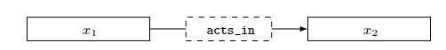
一个在图 上执行查询 得到的 simulation ，由关系表示为 。
另外一个 simulation，表示为关系，从某种意义上来说，它同时包含了 Clint Eastwood 和 Anna Levine 的匹配。这个例子说明了 simulation-based semantics 可以在一个关系中捕捉到多个同台匹配，这就是为什么可以更有效地评估他的原因之一。
将同一个查询节点匹配到多个图节点的想法可能与直觉相反，因为他在单个关系中捕捉了太多信息。由于这个原因，simulation-based semantics 经常被视为定义一组候选匹配的基本语义，这些匹配可以在特定的用以中进一步限制和细化。
虽然以前的一些语义可以限制单个匹配中的项的重复——被称为isomorphism-based semantics——我们也可以考虑一个对于重复的匹配项上的 orthogonal （正交）的语义选择。
- Set semantics： 被定义为 matches 的集合，换句话说，不包含任何重复的结果。
- Bag semantics： 被定义为一个 matches 的包。更具体地说，一个匹配在结果中出现的次数为唯一映射的个数相对应。
事实上，在bgps的级别上，不可能出现重复匹配，因此 set 语义和 bag 语义是等价的，然而，当将bgps添加 projection（投影）， union（并集）等特征时，可能会出现重复匹配。
Complex graph pattern
就传统的关系操作而言，Basic graph patterns （bgps）包含了自然连接和基于等式的选择（因为BGP中可以包含常量）。
Complex graph patterns （cgps）通过传统的关系操作扩展了 bgps——称为 projection（投影）， union（并集）， difference（差集） , optional (left-outer-join)（左外连接）， fiter( selection) （过滤，包括选择）。我们下载将依次介绍这些 features。
Projection
我们称 可能返回的变量及与图模式 （独立于 ）的输出变量相匹配。
对于一个bgp， 这始终是查询中所有变量的集合。然而，projection（投影）允许选择图模式输出变量的子集作为新的输出变量：它允许声明那些变量在执行cgp时被认为是相关的。比如，在之前的例子中，仅检索在 Unforgiven 中一起出演电影的演员的名称——对于用户来说，他对节点和边并不感兴趣——我们可以对于变量 和 进行投影，其他的变量可以在结果中直接省略。
在 SQL 中投影操作往往对应着 select 关键字。
Join
虽然两个 bgp 的 join（连接）可以很容易地表示为另一个 bgp (在同态的语义下)， 更复杂的图模式或其他语义需要显式地定义此操作符。
这对应着由两个图模式 和 定义的查询上的关系连接（更具体地说，自然连接）。这个连接的输出变量对应于 和 输出变量的并，其包括了将 的一个匹配与 的一个匹配相结合而获得的匹配结果。更具体地，当他们对有相同的值的 和 的输出变量共享的变量， 可以连接两个这样的匹配。在这种情况下，我们称 matches 是 compatible （兼容）的。
Union and difference
令 和 是两个图模式， 与 的 union （并集）是一种 complex graph pattern，其输出结果是 和 输出结果的并集。
比如，在图3所示的电影数据库中，一个人可以使用 union 操作符来查找 Clint Eastwood 参演或导演的电影。
与 的 difference （差集）也是一种complex graph pattern，其输出结果是 的匹配且不是 的匹配。
比如，可以通过 difference 操作符来查找 参演但不是导演的电影。
从计算来说， union 是相对简单的， difference 是较为困难的。
Optional
Optional 操作符是基于两个图模式 和 的 join 操作，但与直接忽略的匹配 中不能与 的匹配相连接不同， optional 操作符保留了他们以便最大化检索的信息量。这个特性在处理不完整的信息时格外有用。
比如，在图5中，用户的性别信息是不完整的，但客户仍然是感兴趣的。假设客户想要检索有 U2 tag 的用户，并得到他们的性别。如果使用自然连接，像 Julie Freud 这种没有显式性别的用户就被排除在结果之外。但是如果使用 optional 操作符，不包含性别信息的用户仍然会作为结果返回。
在关系数据库中，这种被称为 left-outer join （左外连接）。
Filter
用户可能希望基于使用不等式或其他类型的表达式返回的一些中间值来限制cgp在图数据库 上的匹配。
比如，一个客户可能对于在 October 2015 时有共同爱好的朋友感兴趣，在这种情况下，客户可以提交如下所示的 filter：
在图模式上应用 filter 不会改变其输出变量。一般来说，过滤表达式包含关系运算符允许的通常条件包括：不等式，布尔连接词，如 AND，OR， NOT等。
Graph patterns in practice
现在，我们将进一步研究图模式如何应用于三种使用查询语言：SPARQL，Cypher和Gremlin。我们选择这些语言是因为他们是实践中最为广泛使用的三种查询语言，同时具有显著性差异：SPARQL通过RDF进行操作，Cypher在 property graph 上运行，Gremlin在本质上比其他两种方法更具命令性，并且更倾向于图遍历而不是图模式匹配。
我们将通过下图简单描述三者的不同：

SPARQL
SPARQL是W3C推荐用于查询RDF图的声明式语言。SPARQL查询的基本构建块是 triple patterns，为RDF三元组，其中主语，谓语或宾语可能是变量（在SPARQL中，通常使用符号‘？’开头）。多个三元组模式可以组合成一个 basic graph pattern。在 basic graph pattern 之上，SPARQL也支持所有之前讨论的关于 complex graph pattern 的特性。
SPARQL 的计算基于 homomorphism-based bag semantics。
以下面图作为RDF图的示例：
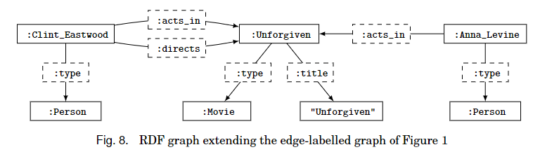
以下的SPARQL表示了一个 complex graph pattern，其组合了图7（a）中的 basic graph pattern，另外额外添加了投影操作，只需要返回共同参演的演员而不需要电影的标识符。
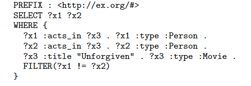
由于RDF图中的常量可以是IRIS， PREFIX 的目的是为出现的常量的命名空间定义一个快捷方式。
在 SELECT 子句中，我们指定了希望投影为输出的变量。其中 WHERE 子句捕获图7（a）的 basic graph pattern，它包含六个三元模式（用.分隔），其对应了图7（a）中的边。另外，用于SPARQL的语义是基于同态的，我们添加了一个 FILTER 来保证 和 不映射到同一个人的情况。
前面的示例展示了SPARQL如何支持bgp，投影和过滤。我们现在展示一些关于其他cgp的简单示例，其都是基于图8的图数据库。
下例展示了 union 操作符来查询 Clint Eastwood 参演或导演的电影：
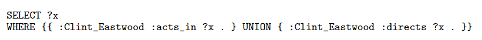
UNION 左右的两个模式将被独立的计算，他们的结果将取并集，返回的结果为 Unforgiven。事实上，这个结果会返回两次，因为SPARQL默认采用的是 bag semantics。
下例中通过 difference 操作符来查找 参演但不是导演的电影：
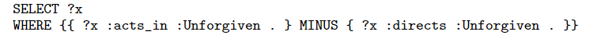
任何 MINUS 左边的匹配，如果和右边的匹配兼容，将被删除。因此返回的结果是 Anna Levine。
下例说明通过 optional 操作符来查找演员参演过的电影，除了此电影之外，该演员没有参演过其他电影：
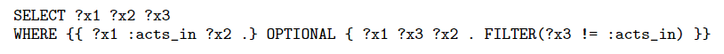
将返回结果：
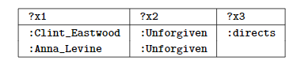
Anna_Levine 将作为结果返回，因为她甚至没有参与过其他任何电影。
Cypher
Cypher是一种用于查询 property graph 的声明式语言，其使用 patterns 作为主要的构建块。与 SPARQL不同，Cypher采用了基于同构的 no-repeated-edges bag semantics。我们将展示使用Cypher对图3中的 property graph 进行计算。
图7（b）中的模式在Cypher中被写为：

MATCH 子句来指定bgp，节点写在 () 内，边写在 [] 内。
标签的过滤可以在节点后用 : 分隔后编写，比如 表示节点 必须与标签为 Person 的节点像匹配。
特殊的属性值可以标记为 { }，比如对于 表示一个节点必须与标签为 Movie，属性 title 的值为 Unforgiven 的节点相匹配。
RETURN 子句可以被用来对于输出变量进行投影操作。
Cypher实现了 no-repeated-edge semantics，因此对图3的电影图的查询计算不会包括 和 同时映射到 Clint Eastwood 的情况，因为他需要将相同的边 匹配两遍（对于 Anna Leving 也是一样）。 克服这一限制的一种可能的实现方案是使用Cypher的显式（自然）连接操作，通过简单地包含其他额外的 MATCH 命令实现。比如，如果我们想构造一个模式来实现检索同一部电影中参演的所有演员对，包括重复的演员，我们可以通过如下 Cypher 语句实现：
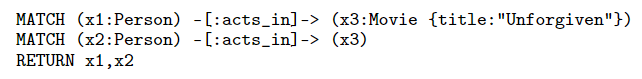
这相当于两个 MATCH 语句给出的两个模式求值的自然连接。在这种情况下，结果包含 Clint Eastwood 和 Anna Leving。
如果变量 存储节点或边的id，则Cypher 提供 . 操作符来指向 的某些属性的值。比如，我们通过 表示变量 $x_1 $ 属性 的值，因此 将返回演员的姓名（而不是他们的节点id）。
Cypher支持 union，difference ， optional 和 filter。我们提供一些基于图3的例子。
在如下的查询中，通过 union 操作符来查询 Clint Eastwood 参演或导演的电影：
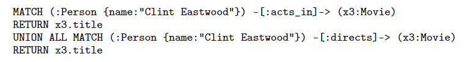
UNION 左右的两个模式将被独立的计算，他们的结果将取并集。 ALL 关键字说明应该返回重复项，在这种情况下 Unforgiven 将被返回两次。省略 ALL 关键字，Unforgiven 只返回一次。
下例中通过 difference 操作符来查找 参演但不是导演的电影：
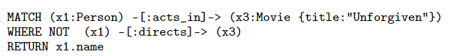
NOT 关键字表示了 difference 运算符。
下例说明通过 optional 操作符来查找演员参演过的电影，除了此电影之外，该演员没有参演过其他电影：
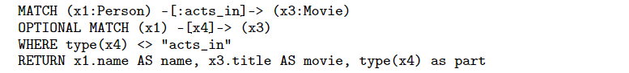
在这个查询中， WHERE 子句是一个过滤表达式：<> 表示不等式， type 是一个内置函数返回边的标签。
第一个匹配会检索所有演员和电影对，第二个 optional 匹配会检查每个匹配对的其他边，标签不能是 act_in。
Cypher 允许在 RETURN 子句中，使用 AS 操作符来指示查询结果应该显示在列的特定名称下。比如 表示存储在变量 中的节点属性 title 的值应该显示在一个名为 movie 的列中。因此，本查询返回：
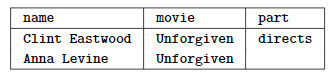
Gremlin
Gremlin是Apache Thinkerpop3 图框架的查询语言。虽然Gremlin也是基于 property graph 的，但它与之前两种声明式语言有很大不同：SPARQL和Cypher明显受到SQL的影响，Gremlin更感觉像一个编程语言接口。同样，他的焦点是 navigational queries 而不是 matching patterns。但是，在它定义的 graph traversal 操作者，我们可以找到熟悉的 graph pattern matching 的特性。与SPARQL相似，Gremlin也使用了同态的语义。
直观地说，graph traversal 提供了如何将图形 navigated 的明确指示。比如，为了检索所有 Clint Eastwood 参演的电影。我们首先加载一个 graph traversal 对象（标记为 ）并写：
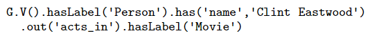
调用 返回图中所有的节点集合 （ 表示 vertex）。我们之后提交两个节点的选择，顺序为 G.V().hasLabel(‘Person’).has(‘name’,‘Clint Eastwood’) 精确地遍历所有标签为 Person 的节点并且具有 name 为 Clint Eastwood。命令 out(‘acts_in’) 遍历所有的节点的对应的出边的标签为 act_in ，最后 hasLabel(‘Movie’) 表明过滤所有到达的节点的标签不是 Movie。
在表达路径时，Gremlin是最自然的，因为所有这些模式都可以通过图上的遍历来模拟。
以下的Gremlin遍历可以获得所有和 Clint Eastwood 共同参演过电影的演员：
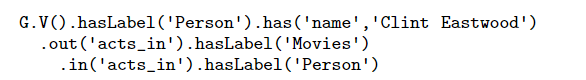
为了说明一个更复杂的例子，我们展示了图7(b) 中的bgp如何在Gremlin中表达：
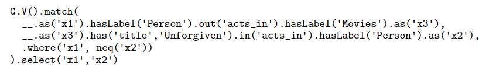
在这个遍历中，match 内部制定了两个内部遍历和一个过滤。__ 操作符意味着后续操作基于上一级的父遍历、比如 是基于 的所有节点。
as 命令声明一个变量，然而，不是 将所有的节点绑定到变量 ，而是将整个遍历作为一个bgp，这意味着从 开始的后续步骤必须满足该变量才能匹配到该节点。因此，每个内部遍历都可以看做一个树形的bgp。然后将这些内部遍历连接起来，以创建一个可能包含循环的更复杂的cgp。在上述例子中，这个两个内部遍历伴随着一个 where 命令，该命令调用了一个 not-equals ( neq ) 过滤以确保 和 绑定到不同的结果。select 命令（ match 之外 ）执行了一个查询之外的投影操作：只返回演员，不返回电影。
虽然Gremlin支持bgps，过滤和投影，但其重点是 navigational queries。
The conplexity of evaluating graph patterns
为了理解使用查询语言的计算复杂性，我们考虑以下计算问题：
在此语言中给定查询 ，一个可能的答案 和一个图数据库或属性图 ，证明 是否是 在 上的答案；也就是说是否 .
需要考虑的最基本的图查询语言片段是由bgp组成的片段和投影，对应于关系数据库中的结构化查询。对于基于同态和三种基于同构的语义来说，这个计算问题被证明是 NP-Complete的。另一方面，在基于 simulation 的语义下，可以在多项式时间内解决。所有的这些问题的结果在无论是 set 语义还是 bag 语义下的结果都是相同的。
在实践中，查询 的大小通常要比数据 小很多，因此在分析和评估时，通常认为两个的角色不同。
这激发了 data complexity 概念的引入。其中假设 固定，仅通过 给出输入。
这与 combined complexity 相对应，其中它是根据输入查询和数据库所定义的。
在 data complexity 中，由bgps和投影组成的查询计算不仅可以在多项式时间内解决，而且还在对数空间内进行。尽管 data complexity 听起来有点简单化，但事实证明，它对于理解在中等规模的数据库上评估小型查询的成本是有用的。
此外，在实践中，人们通常对匹配简单的bgps感兴趣，因为这些bgps较为容易计算。一个主要的结论是，图模式的底层结构越接近环（也就是说，它越不像树），查询的计算就越难。
除了bgps和投影的研究外，对于SPARQL中cgps的 combined complexity 也进行了广泛的研究。首先考虑 set 语义下的SPARQL，如果语言中只允许 projection, join, union, join 和 filter，那么计算问题的 combined complexity 仍然是 NP-complete的。
如果 difference 和 optional 操作是被允许的话，也就是说SPARQL 和 关系代数有着相同的操作符，因此他的 combined complexity 是 PSPACE-complete的。
可以被证明 MINUS 操作符可以通过使用 optional， filter 和 join 来模拟，因此在没有 MINUS 操作符的前提下， combined complexity 仍然是 PSPACE-complete的。
对于 SPARQL 使用 bag 语义的情况， combined complexity 仍然是 PSPACE-complete的。
Navigational Queries
虽然图模式允许以有限的方式查询图数据库，但提供更灵活的查询机制，允许 navigate 数据的拓扑结果，通常是有用的。
一个这样查询的例子是找到在社交网络中一些人朋友的朋友，如图5所示。这里，我们不仅对一个人直接的熟人感兴趣，还对他可能通过其他人认识的人感兴趣，也就是，他朋友的朋友，他们的朋友等。
上面这种查询被称为 Path Queries （路径查询），因为他们要求我们使用任意长度的路径在图中进行 navigate。路径查询已经在语义网，provenance 和路线发现应用等领域得到了应用。
当然，有时候单独的路径是不够的，我们对图内图模式的重复感兴趣，从而产生了常用于生物网络的 graph motifs 发现经常重复的代谢途径或模式。我们称所有的此类查询为 navigational queries。
Path Queries
路径是图数据库中最基本的 navigational object。最基本的库路径查询是 path existence（路径的存在性）查询，它查询属性图中的两个节点直接是否存在某些定向路径，而不考虑边的标签；在某些情况下，可以返回另外一个或所有这样的路径。这是一个与有向图的可达性和传递闭包问题相关的基本概念，并且在理论上已经得到了很好的研究。然而，在实践中，通常需要对要计算的路径施加附加学术的路径查询，比如对边标签的限制。社交网络中传递的朋友的朋友的关系就是这样一个例子，我们只对标有 knows 的边组成的路径感兴趣。
Definition
我们可以将路径查询定义为具有一般形式：，其中， 制定了我们希望检索的路径的条件， 和 表示路径的端点。端点 和 可以是变量，也可以是特定节点，或者是两者的混合，甚至是同一个节点（在这种情况下为环），对于一个表达式 ，我们通过使用符号 表示我们只对连接两个节点的路径的存在性感兴趣而不会施加任何进一步的约束。另外， 可以表示更复杂的各种形式的 path constraints （路径约束），但是最著名的是 regular expression （正则表达式）定义在边标签的集合 中。当用作路径约束时，整座表达式指定标远标签的所有路径。直观上说，正则表达式允许连接路径，以应用于 union/disjunction ，以及应用路径零或多次。使用正则表达式指定的路径查询查询通常称为 Regular Path Queries （正则路径查询）。
我们在社交网络中的（传递的）朋友的朋友的关系可以通过以下正则路径查询（RPQ） 来表达：
这里的符号 + 表示一个或多，正则表达式 knows+ 用于指定由一个或多个带由 knows 标签的有向边组成的序列。因此端点 和 可以被匹配为社交网络中任何满足要求的两个节点，相似地，我们可以通过如下的路径查询：
表示连接，以匹配节点 和 ， 是一个 person， 是一个 由 的朋友的朋友传递的 likes 的 post。最后，我们可以提交一个路径连接，以匹配 的朋友的朋友 likes 或 dislikes 的 post：
其中， 表示是一个 union。
RPQ的特性可以组合在一起（隐式地）支持图上许多其他 navigational 操作。比如，RPQ ，其中 为：
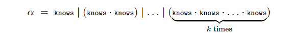
定义了深度为 的朋友的朋友的关系。类似地，比如， RPQ ，其中， 表示了所有 中的单词的正则表达式集合，对应于路径上没有约束的路径查询。
然而，RPQ 也有许多不支持的 navigational 操作。因此，有时对RPQ进行扩展，以允许进一步的表达。
一个这样的扩展是允许 inverse 操作符 （对于集合 中的元素 ）来指定沿后向边的遍历，它是用逆运算增强的RPQ，被称为 Two-way Regular Path Queries （2RPQ）。
考虑图3所示的电影数据库。2RPQ通过如下查询得到所有共同参演过同一部电影的演员们：
表达式 act_in 的作用是将节点 与一个人相匹配，然后路径导航到 主演的电影，然后反向寻找与 共同参演的演员（或者说 自身）。相似地，我们可以通过以下查询：
为了计算共同参演的关系的传递闭包。比如，我们想检查那些演员的 Bacon number 是有限的，也就说，那些演员和演员 Kevin Bacon 有可传递的在一个电影中共同参演的关系——我们可以使用该模式，将 定义为 Kevin Bacon，将 作为变量。
Evaluation
为了定义路径查询时如何计算的，我们需要形式或图数据库上路径的概念。在一个属性图 中，一条路径 是一个序列 ，其中 ，每个 都是图 中连接 到 的一条边。路径 的标签，表示为 ， 是边标签的串联，表示为 ，其中 是边 的标签。比如，序列 是一条图5所示的路径。路径的标签是 $knows \cdot dislikes $。注意到对于序列中每个 中的节点 也是一条路径（长度为0）。长度为0 的路径的标签为空，表示为 。
为了在 edge-labeled graph 中定义路径，需要注意在模型中没有边标识符，因此不能采用之前的定义。相反，我们定义一个 edge-labeled graph 的图 的路径 为一个序列：，其中 是图 中的一条边。在这种情况下路径的标签为 。
图 中 evaluation of a path query ，表示为 ，由标签满足 的图 中所有的路径组成。比如，若 ，任何路径都属于 。但是若 是一个正则表达式 ，只有路径满足 的才属于 。路径匹配集合 可能是无限的（当 中有环时），因此，这种计算一般被认为是不可计算的。
令 为图5中的属性图，考虑RPQ 。因为 和 中存在环，因此 中的路径数量是无线的：它包含所有形如 和 的路径。当RPQ ，下面表现了 中的一些路径：
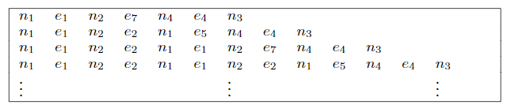
中的路径的数量也是无限的。
在图模式的情况下，不同的实际问题——比如，具有涉及环的路径查询——导致对于路径查询计算的不同语义，更具体地说，对于 中所包含的路径的结果不同，下面，我们总结在实践中最常用的几种语义：
- Arbitrary path semantics：考虑所有的路径。更具体地说， 中所有满足约束条件 的路径都要包含在 中。在这种语义下， 可能包含无限多条路径。然而，在这种语义下枚举所有路径是不可行的，但是用户可能只对一条路径是否存在感兴趣，或者说由这种路径连接的有限多个节点。
- Shortest path semantics： 仅用最短路径来定义，也就是说，能满足 约束的最短路径。当我们想寻找由某条路径连接的节点对时，我们可以使用这种语义，对于每个节点对，可以使用该对的最短路径（或者相同长度的最短路径集）。在上例中，只有第一条路径满足。
- No-repeated-node semantics： 中包含所有每个节点只出现一次的路径。这样的路径通常被称为 simplest paths。这种语义在一些实际场景中是有意义的，比如，在寻找旅行路线时， 通常不希望有多次到达同一地点的路线。在上例中，只有第一条路径满足。
- No-repeated-edge semantics： 中包含所有每条边只出现一次的路径。 Cypher使用该语义。在上例中，前两条路径满足该语义。
Oputput
如前所述，用户可能对于计算 中所包含的路径由不同类型的问题。比如：是否存在这种路径？ 中是否包含一个特定的路径 ？ 中由路径连接的节点对是什么？ 中有哪些路径？我们可以通过根据这些问题所返回的结果进行分类。
- Boolean：在一些情况下，路径查询的输出可以是 true / false。例如，是否 非空，在两个特定的节点之间 中是否存在一条特定的路径。
- Nodes：在一些应用中，我们对由特定路径连接的端点感兴趣。在这种情况下。我们从 中投影得到这些端点： 中所有由路径连接的节点对 和 。在之前例子中，我们可以从 中投影得到节点对 。
- Paths：在这种情况下， 返回一些或全部完整路径。比如，如果使用最短路径语义定义 ，则返回一个或多个此类最短路径。在其他情况下，可以根据更复杂的条件选择返回的路径，这在某些应用中可能是有用的，例如，基于路径上的排名来选择要返回的路径，这应用于：寻路应用中要求返回 top-k 的最佳路径。
- Graphs ：例如在 arbitrary path semantics 下，是提供输出的 compact 表示，例如，以另一个图的形式，其路径恰好是查询输出中的路径。
虽然前两种类型的答案可以用标准关系代数来处理，但对于如何将路径表示为查询输出还没有达成共识。特别是，不像图模式查询的解具有固定的输出，路径没有固定的输出，因此我们不能像bgp匹配那样直接定义变量到常量的映射。同样地，虽然 SPARQL 支持通过 CONSTRUCT 返回 graphs，但只支持在最后一步创建图，这些图不能通过其他运算符进一步计算。
Sets vs. bags
对于返回结果是 boolean 或 graphs 的查询， set 和 bag 语义没有任何区别。同样，在返回完整路径的条件下，即返回每个路径中节点和边的完整序列，不会出现重复的情况，因此也没有区别。然而，如果选择返回 nodes , 或者其他从完整路径投影到 节点/边 的情况，则 set 语义和 bag 语义有明显不同。特别地，如果我们考虑返回路径的端点作为输出的情况：当使用 set 语义时，当 中至少有一条从 到 的路径时，将只返回一次 。当使用 bag 语义时，对于每条连接了 从 到 的路径，都将返回一次 。
bag 语义在 arbitrary path semantics 下是有问题的，因为路径集可能是无限的。但是即使在路径的数量是有限的条件下，仍然存在一个有高复杂性的计算问题，因为 bag 语义隐含着需要计数路径。比如：计算图 中从 到 中没有重复节点的路径数量是 #P-complete 问题，这意味着他的计算是困难的，比如：计算一个命题公式中满足条件的赋值数量，或计算图中的哈密尔顿回路的个数。
计算的高复杂性导致了很多实际结果。比如，在 SPARQL 标准的草稿中，bag 语义和 property 路径的初次嘴和要求答案中一对节点的重复次数等于他们之间的路径数。因此，增加了考虑 simple paths 的限制，以保证结果的有限性。但不幸的是，这导致了一个非常复杂的路径技术问题，通常通过 和 的属性上施加 set 语义进行实现以避免计数无界长度的路径。另一方面， Cypher 在返回节点时维护了一个 bag 语义，其中默认使用了 no-repeated edge semantics。
Adding paths to basic graph patterns
现在我们已经了解了如何使用路径查询来匹配路径，以及如何使用图模式来匹配子图，我们可以将他们组合起来，生成一种强大的查询语言，该语言允许找到更灵活的匹配。特别是，这种语言允许图模式中的一些边可以被路径取代（满足特定的条件），而不是一条简单的边。
在之前的例子中，我们使用 来寻找具有共同参演关系的演员，并提到该查询可用于查找具有 Bacon number 的演员。为了使例子更复杂，考虑图3中的电影数据库已经扩展到还包含关于科学论文以及其作者的书目信息。在这个数据库中，节点的类型是 movie ，person 或者 article。 persons 和 movies 的连接如图3所示，同时一个 person 还可以用一条标签为 author 的边指向标签为 article 的节点，在这个数据库中，我们想要寻找具有 Erdos-Bacon number 的演员，也就说，寻找那些与 Kevin Bacon 有着共同参演关系，同时与 Paul Erdos 有共同作者关系的人们。查询可以通过图9实现：
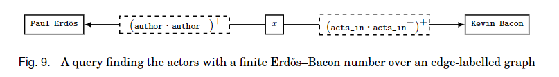
将 path queries 与 basic graph patterns （bgps）集合，可以得到 navigational graph patterns （ngps）。在 edge-labeled graph 中，ngps的定义与bgps类似，即他们都是 edge-labeled graph ，其中节点可以是变量或常量，边也可以是变量或常量。 RPQs 或 特殊的符号 ***** 表示任何路径。 匹配的定义与 bgps 相同，但是现在每条没有标签的边变量都被映射到路径上。也就是说，如果在ngps中有 ， 是 ***** 或者正则表达式，匹配 必须啊满足 和 由 中的路径相连接，并且 是一个路径查询 。注意到为了让匹配的大小受查询大小的限制，我们选择在ngps中对路径表达式选择 an existential interpretation。 也就是说，我们考虑的是 的 boolean 输出的语义，只检查 中是否存在一条连接 和 的路径，但并不返回这些路径。
考虑图5中的社交网络，我们像找到 Julie 的朋友的所有朋友，他们都 like 带有 Julie 关注标签的 post。 下图表示了这个ngp：
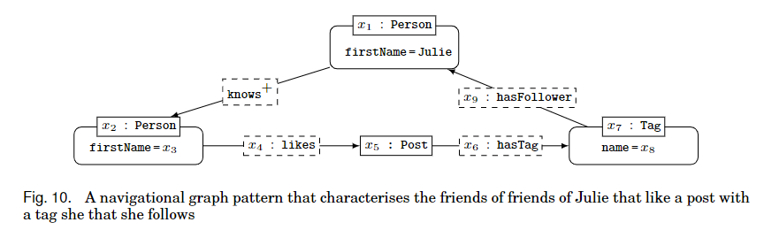
在理论文献中，命名为 conjunctive regular path queries （CRPQs）。
一个自然的关于ngps的扩展是考虑 complex navigational graph patterns （cngps）, 可以选择运用 selection, projection, join, union, difference, optional 对ngps进行运算。cngps构成了 SPARQL 等语言的核心。
为了简单说明 cngps 的表达方式，考虑上图中的ngp 并假设我们投影 ：Julie 朋友的朋友所 likes 的 post 的id。我们认为这些帖子是给 Julie 的 “推荐帖”。下面我们考虑一个相同的模式寻找所有 John 的推荐帖。下面我们可以通过将这两个模式 union 找到给 Julie或 John 的推荐帖，或者通过交集找到给两者的共同推荐，或者通过差集找到给 Julie 但没有给 John 的推荐帖，或者通过过滤找到最近的帖子。这些都可以表示为cngps。
Repetition of patterns
对于我们目前所看到的 navigational languages，路径是唯一允许递归的形式，但为了表示某些类型的查询，我们可以能需要更多递归的表达形式。比如，我们希望在电影数据库中检索所有具有共同参演关系的演员对，但我们只想考虑只导演过一部电影的演员（比如 Clint Eastwood）。我们不能通过路径上的正则表达式来表达这个查询，因为除了要寻找共同参演的路径之外，我们还需要检查路径中的每个中间节点都只有一个带有 directs 的出向边。在这一节中，我们将介绍如何实现这种查询。
Nested regular expressions
nested regular expressions （嵌套正则表达式， NREs）语言使用 branching （分支）和 nesting （嵌套）操作符来扩展 RPQs，该操作符允许递归地检查路径节点上其他嵌套的RPQs。因此，NREs的计算由一些路径组成，其中节点可能马不足给定嵌套RPQ的分支路径。因此，从概念上说，NREs 允许捕获与树形模式匹配的路径，从而提高了表达能力。这已经在实践中得到了应用，例如，形成了 RDF中 navigational query languages 的基础。
上例中的查询可以通过如下表达式实现：
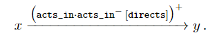
这个查询请求一个路径，它的标签 属于正则表达式（带有逆表达式），但是附加了一个额外的条件：每个由子表达式 捕获的中间变量必须满足有一条标签为 directs 的出边。更为常见的是，后一个括号表达式是一个 RPQ，它被用作对前面的子表达式进行存在分支测试，以确保每个匹配的节点都通过给定的括号表达式连接到其他节点。注意，上面的模式没有检查开始节点是否是一个 director。
这个递归模式由下图所示的结构定义：也可以看作从图11（a） 中获取基本模式，然后递归的应用他，如图11（b）所示：
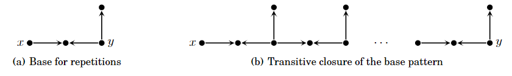
正如我们对正则路径查询所做的一样，可以考虑这些模式的连词，从而得到 conjunctive nested regular expressions （CRNEs）语言。扩展NREs的另一个方向是增加更多表达式特征，例如 negation 和 unary formulas。通过这样做，一个等同于应用 XPath在数据库中的语言。
Regular data path queries
在考虑 NREs的同时，可能会很自然地考虑如何将类似的模式应用到属性图中，特别是测试沿着遍历的路径出现的各种节点和边属性的值。
考虑如下例子：在社交网络中，我们讲述了如何使用表达式 来计算朋友的朋友关系，假设我们添加一个额外条件：只考虑生活在同一个国家的人：每当我们遍历一条带有 knows 的边时，我们想检查这条边连接的两个节点的属性为 country 的值是否相等。这可以表示为如下表达式：
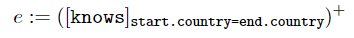
过滤器 对构成路径的所有由标签为 knows 连接的节点对检查上述条件，注意到与 NREs不同，这里我们可以在属性值之间 comparisons（比较）。另外，RDPQs 中的括号 **[ ] ** 与 NREs 有着不同的含义，后者适用于节点，前者是表达一条路径的端点之间定义表达式。
像上面 这样的表达式可以通过扩展或普通正则表达式 的语法来形式化，其中， 是一个表达式， 是一个形如 的过滤器，其中， 和 都是属性名。完整的语法为 ： , 其中， 是一个形如 或 的连接表达式。如果在路径查询 中允许任意的表达式 ，就会产生 regular data path queries（RDPQs）。
Datalog variants
到目前为止，我们考虑的所有递归表达式都是基于路径（RPQs）或树（NREs）。那么，当我们考虑虚招任意bgps重复的更一般的查询时，会发生什么呢？事实证明，这种查询通常可以用 Datalog-like 语言表示，这相当于基于规则的强大的递归语言。
为了举例说明，我们考虑一个 edge-labeled graph。不再考虑那些仅仅因为在电影中合作过而联系在一起的演员，而是增加一个限制，他们必须另外导演过一场电影（可能是不同的电影）。让我们把这样一对有联系的演员-导演称为：“同行”。考虑图1中的图 ，我们可以创建如下查询寻找同行：，其中 是变量， 包含边 ，， 和 。
为了在Datalog中表达这一点我们采用了关系 编码图 中的一条边 。然后，我们可以向原始的bgp 表达为如下形式：
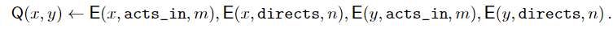
应用此规则我们生成了一个二元关系 ，它精确地包含了所有由 bgp 在 上的匹配；换句话说，我们可以很容易的将 bgp 表达为一个 Datalog 规则，并以此来计算它。我们可以添加以下规则：
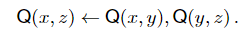
以递归的方式应用这两个规则可以生成 的输出，该输出会包含所有 “同行” 的可传递闭包。
更重要的是，如下图所示，图12（a）中的基础模式不是一条路径或一棵树，因此，通过这两个Datalog规则所实现的图12（b）中所得到的递归模式不能用我们之前讨论过的任何语言表达，递归模式可以是任意的bgp。
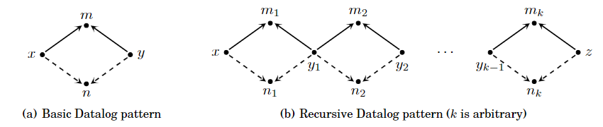
以类似于RPQs返回路径的方式，可以考虑为 Datalog 返回一个相似的结果。但是不同于RPQs有由边连接的节点序列不同，Datalog 更像是子图序列。然而，由于应用在 Datalog 规则上的输出是一组固定数量的关系，因此无法将其直接作为序列返回。实际上，如何个表达 Datalog navigates 的结果尚未探究。相反，可以利用Datalog 来查找以这种形式连接的节点对，或者生成包含所有 navigated 的边的图的关系表示。
Navigational queries in practice
SPARQL
Cypher
Gremlin
Complexity of evaluating navigational queries
Path queries
Navigational graph patterns
More expressive queries
Final Remarks
Feature categorsation
- homorphism-based
- isomorphism-based
- simulation-based